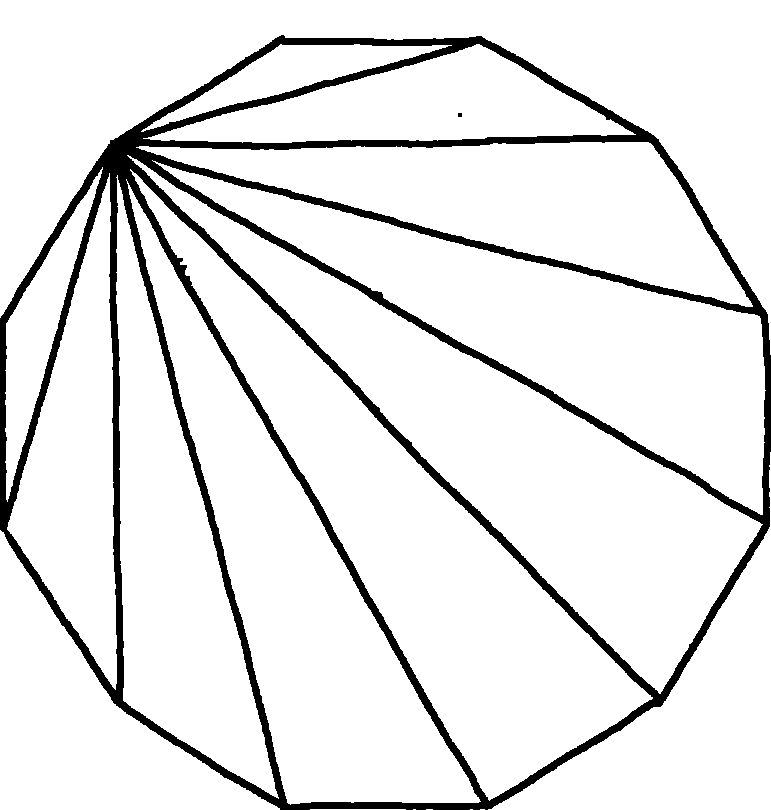
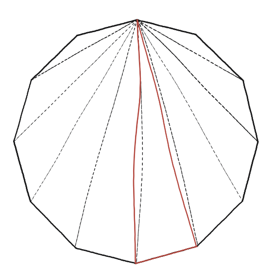

Es poden mesurar les diagonals i l'àrea del dodecàgon regular?

Dues preguntes, una sola construcció de partida
"Diagonals" i "àrea" semblen dues preguntes independents, però totes dues comencen igual: triangulant el dodecàgon (n=12) des d'un sol vèrtex, exactament com a la Qüestió 29. Aquí n−2=10: el ventall de diagonals des d'un vèrtex crea 10 triangles.
Un parany que cal veure abans de calcular res
Aquests 10 triangles del ventall no són tots iguals —es veu a simple vista comparant el primer, prim i llarg, amb els del mig, més amples. Això no és cap problema per comptar diagonals (encara funciona igual), però sí que ho és per calcular l'àrea: sumar 10 vegades l'àrea d'un d'aquests triangles donaria un resultat incorrecte, perquè no representen la mateixa porció del dodecàgon.

Dues fonts per triangular, dos resultats diferents
Hi ha una segona manera de triangular el mateix dodecàgon: unint el centre amb els 12 vèrtexs, en lloc d'un vèrtex amb els altres 11. Aquesta segona triangulació dona 12 triangles, i com que el polígon és regular, aquests 12 triangles són tots idèntics entre si —cadascun amb dos costats iguals al radi del dodecàgon i l'angle entre ells sempre de 360°/12=30°. Per comptar diagonals, qualsevol de les dues triangulacions serveix; per calcular l'àrea, només la segona (des del centre) és neta, perquè permet multiplicar per 12 en lloc d'haver de sumar deu àrees diferents.
L'àrea, triangulant des del centre
Cada un dels 12 triangles té dos costats iguals al radi R i un angle de 30° entremig; la seva àrea és (1/2)R²sin(30°)=(1/4)R². Multiplicant pels 12 triangles: àrea = 3R². En funció del costat s del dodecàgon (i no del radi), el resultat equivalent és àrea = 3(2+√3)s². Per passar d'una fórmula a l'altra cal la relació s = 2R·sin15°, que no surt del mètode elemental de la Qüestió 26: partir un isòsceles amb l'altura i aplicar Pitàgores dona bé els angles de 30°, 45° i 60°, però no el de 15°, que necessita la fórmula de l'angle meitat.
Sí, es poden mesurar totes dues coses, però amb mètodes diferents segons el cas. Per l'àrea, triangular des del centre (12 triangles idèntics) és net: àrea=3R². Per les diagonals n'hi ha cinc llargades diferents, cadascuna 2R·sin(k×15°), on k és el nombre de passos entre els dos vèrtexs que uneix: k va de 2 a 6, i la de k=6 és el diàmetre. (k=1 dona la mateixa fórmula però per al costat, que no és cap diagonal; i de k=7 endavant es repeteixen les mateixes llargades des de l'altra banda, perquè k i 12−k donen el mateix.) Triangular des d'un vèrtex (10 triangles desiguals) també compta bé les diagonals, però complica innecessàriament l'àrea.
Comprovació
Dodecàgon de costat s=1: apotema a=1/(2·tan15°)≈1,866, àrea total 3(2+√3)≈11,196. Les diagonals tenen cinc llargades diferents. Comptant per passos entre vèrtexs —de k=2 a k=6, perquè k=1 uneix dos vèrtexs veïns i això és el costat, no una diagonal— valen 2R·sin(k×15°); amb R=1: 1 / 1,414 / 1,732 / 1,932 / 2. La de k=3 dona exactament √2, la de k=4 exactament √3 i la de k=6 exactament 2 —el diàmetre—, bones per confirmar que els càlculs no s'han equivocat. La mateixa fórmula amb k=1 dona 2·sin15°≈0,518, que és el costat: bon control que la fórmula funciona, però no compta com a diagonal.